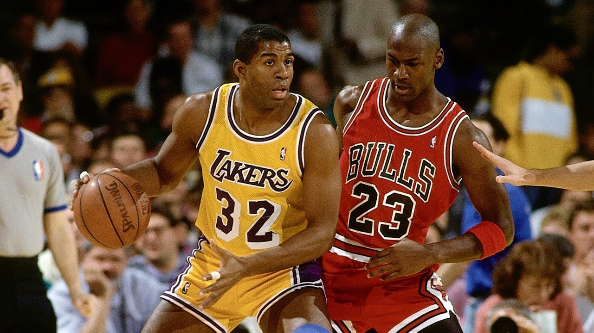
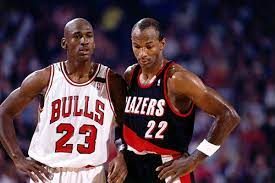
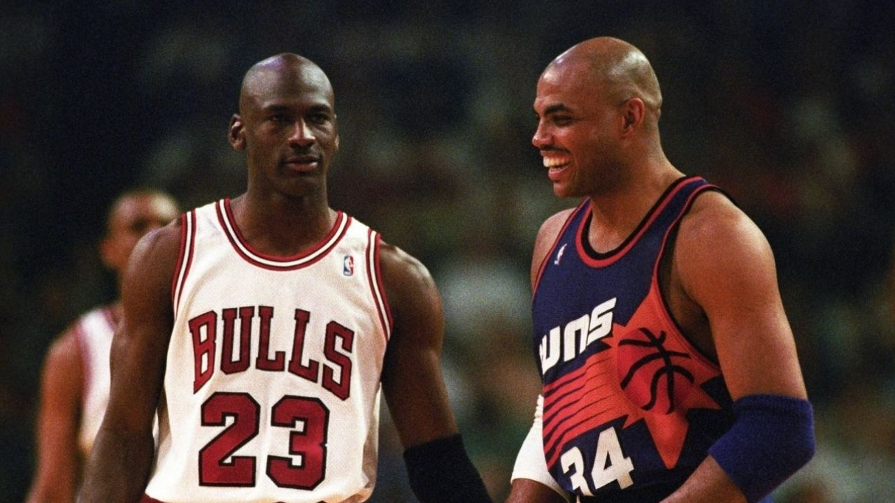
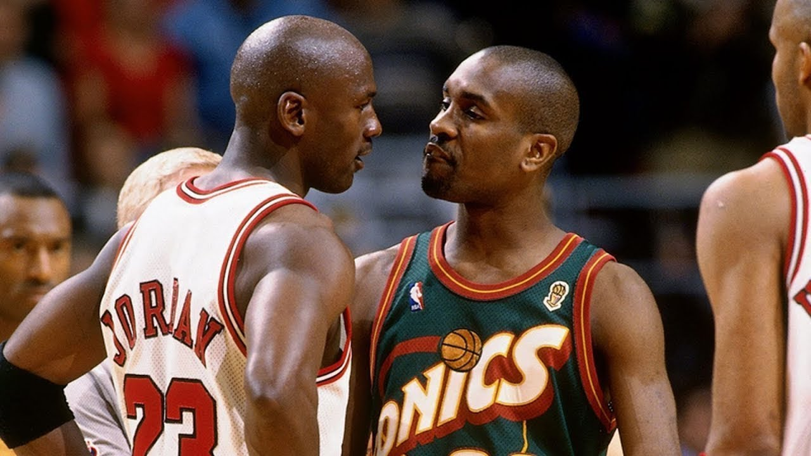
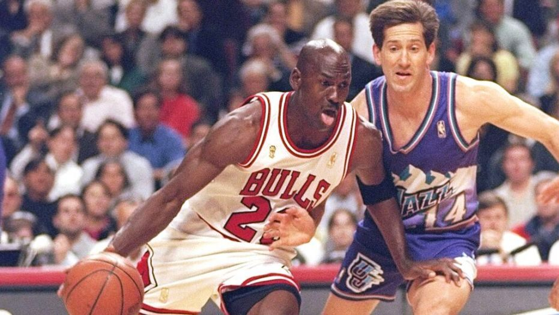

Los CHICAGO BULLS es de los pocos equipos que pueden decir que no perdieron ninguna final, en total llegaron 6 veces a las finales de la NBA, y también son de los pocos que tienen 2 "thre-peat" es decir haber ganado 3 finales de manera consecutiva.
Todas las finales de los Bulls
1991 vs. Los Angeles Lakers, campeones (4-1)
1992 vs. Portland Trail Blazers, campeones (4-2)
1993 vs. Phoenix Suns, campeones (4-2)
1996 vs. Seattle Supersonics, campeones (4-2)
1997 vs. Utah Jazz, campeones (4-2)
1998 vs. Utah Jazz, campeones (4-2)
Las Finales de la NBA de 1991, fueron las series definitivas, de los playoffs de 1991 y suponían la conclusión de la temporada 1990-91 de la NBA, con victoria de Chicago Bulls, campeón de la Conferencia Este, sobre Los Angeles Lakers, campeón de la Conferencia Oeste. Estas fueron las primeras Finales, retransmitidas por el canal NBC, tras 17 años con la CBS.
Las finales de 1991, fueron las primeras Finales de Michael Jordan y las últimas de Magic Johnson. Los Bulls ganaron las series por 4-1, con Jordan premiado con el MVP de las Finales, promediando 31.2 puntos con un 56% en tiros de campo, 11.4 asistencias, 6.6 rebotes, 2.8 robos de balón y 1.4 tapones.

Las Finales de la NBA de 1992 fueron las series definitivas de los playoffs de 1992 y supusieron la conclusión de la temporada 1991-92 de la NBA, con victoria de Chicago Bulls, campeón de la Conferencia Este, sobre Portland Trail Blazers, campeón de la Conferencia Oeste.
Los dos equipos parecían encaminarse uno frente al otro durante la mayor parte de la temporada durante y se hicieron comparaciones entre Clyde Drexler y Michael Jordan toda la campaña. Un mes antes, la revista Sports Illustrated calificó a Drexler como el principal rival de Jordan en una portada en la que ambos jugadores aparecieron juntos antes de los playoffs. Los medios de comunicación, con la esperanza de recrear una rivalidad similar a la de Magic Johnson y Larry Bird, compararon a Jordan y Drexler antes de las Finales.
Los Bulls ganaron la serie en seis partidos y Michael Jordan fue nombrado MVP de las Finales por segundo año consecutivo.

Las finales de la NBA de 1993 fueron la ronda de campeonato de la temporada de la NBA 1992–93 y la conclusión de los playoffs de la temporada . Contó con el dos veces campeón defensor de la NBA y campeón de la Conferencia Este Chicago Bulls , liderado por Michael Jordan , y el campeón de playoffs de la Conferencia Oeste Phoenix Suns , ganadores de 62 juegos y liderado por el MVP de la temporada regular Charles Barkley. Los Bulls se ajustaron en el primer equipo desde los Boston Celtics de la década de 1960 en ganar tres títulos de campeonatos consecutivos, logrando el "tres turbas" con John Paxson .El triple ganador del juego que les dio una victoria de 99–98 en el Juego 6.

Las Finales de la NBA de 1996 fueron la serie de campeonato de la temporada 1995–96 de la Asociación Nacional de Baloncesto (NBA) y la culminación de los playoffs de la temporada . El campeón de la Conferencia Oeste, Seattle SuperSonics (64–18), jugó contra el campeón de la Conferencia Este, Chicago Bulls (72–10), y los Bulls tenían la ventaja de jugar en casa. Las 136 victorias combinadas de la temporada regular de los equipos rompieron el récord anterior de 125, establecido en 1985 entre Los Angeles Lakers , que ganaron 62 juegos, y los Boston Celtics .quien ganó 63 juegos en la última temporada regular. La serie, la final número 50 de la NBA en la historia de la liga, se jugó en un formato al mejor de siete. Este fue el primer campeonato en el segundo tricampeonato de los Chicago Bulls.
Chicago ganó la serie 4 juegos a 2. Michael Jordan fue nombrado MVP de las Finales de la NBA, la cuarta vez que ganó el premio.

Las finales de la NBA de 1997 fueron la serie final de los playoffs de la NBA de 1997 que determinaron el campeón de la temporada de la NBA 1996–97 . El campeón de la Conferencia Oeste, Utah Jazz, se enfrentó al campeón defensor de la NBA y al campeón de la Conferencia Este, Chicago Bulls, por el título, y los Bulls tenían la ventaja de jugar en casa. La serie se jugó bajo un formato al mejor de siete , con los primeros 2 juegos en Chicago , los siguientes 3 juegos en Salt Lake City y los últimos 2 juegos en Chicago.
Los Bulls ganaron la serie 4 juegos a 2. Por quinta vez en tantas apariciones en las Finales, Michael Jordan fue nombrado MVP de las Finales de la NBA.
Los Bulls y Jazz ganaron 133 juegos de temporada regulares combinados, la segunda mayor cantidad en la historia de las Finales. Hasta 2016 , las Finales de la NBA de 1997 fueron las últimas en presentar equipos que ganaron un total de al menos 130 juegos de temporada regular.

Las Finales de la NBA de 1998 fueron la ronda de campeonato de los playoffs de 1998 de la Asociación Nacional de Baloncesto (NBA) y la conclusión de la temporada 1997–98 de la NBA . El dos veces campeón defensor de la NBA y campeón de la Conferencia Este, Chicago Bulls , jugó contra el campeón de la Conferencia Oeste, Utah Jazz , y el Jazz tuvo la ventaja de jugar en casa durante los primeros 2 juegos en Salt Lake City . En una repetición de las Finales del año anterior, los Bulls ganaron la serie 4 juegos a 2 para su tercer título consecutivo de la NBA y el sexto en ocho temporadas.
Michael Jordan fue votado como el Jugador Más Valioso de las Finales de la NBA de la serie (también había ganado el premio las últimas cinco veces que los Bulls ganaron las Finales: 1991, 1992, 1993, 1996 y 1997). Este sería su sexto campeonato de la NBA y su sexto premio MVP de las Finales en seis temporadas completas de baloncesto. Esta sería su última temporada ganando el campeonato de la NBA y el MVP de las Finales.
Las Finales de 1998 sacaron las calificaciones de Nielsen TV más altas en la historia de la NBA con 18.7, e incluso superaron las calificaciones de Nielsen para la Serie Mundial de 1998 , marcando la primera vez que la NBA tuvo una calificación más alta en su ronda de campeonato que en la ronda de campeonato de Major League Baseball. . Los Bulls se dirigieron a la serie como los desvalidos. El alero de los Bulls, Scottie Pippen, declaró: "Es un sentimiento diferente. Nunca hemos estado en esta situación en la que hemos sido descartados. Es un gran sentimiento ser el desvalido porque quieres salir ahora y demostrar que todos están equivocados".